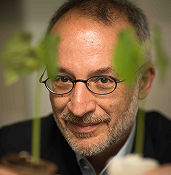
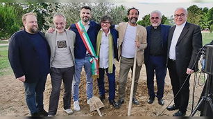
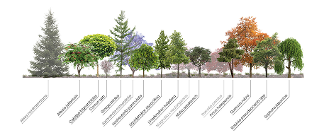

Il caso Mancuso
Grazie ad Internet molti specialisti hanno aperto le porte dell’accademia al grande pubblico, trasformando materie complesse come la biologia in temi d’interesse comune.
Questo approccio comunicativo ha sollevato forti critiche nella comunità scientifica, spesso scettica verso linguaggi troppo distanti dai canoni istituzionali.

Al centro della diatriba troviamo Stefano Mancuso, docente all’Università di Firenze e direttore del laboratorio di neurobiologia vegetale.
Se da un lato la sua divulgazione ha il merito di aver avvicinato migliaia di lettori alla crisi climatica e al mondo vegetale, dall’altro è criticato dai colleghi per aver superato il rigore scientifico.
Il bosco di neofite
Il dibattito risale a quando la comunità scientifica ha bocciato il progetto “Bosco delle neofite”.
Mancuso ha riforestato il parco di Prato utilizzando neofite per trasmettere un messaggio sociale e ambientale.
Le critiche riguardano l’esaltazione per le specie aliene e il parallelismo tra alberi e umani. Secondo gli scienziati, tali tendenze banalizzano temi importanti e distinti tra loro.

Tommaso La Mantia, docente all’Università di Palermo, critica il modo in cui Mancuso tratta l’argomento delle specie aliene, addirittura lodandole.
La Mantia riconosce la presenza storica delle specie d’importazione negli ecosistemi locali ma è allo stesso tempo per la difesa della biodiversità, non è una contraddizione ma di un modo di pensare e agire di fronte una realtà complessa.
Mille miliardi di alberi
Mancuso ha scatenato molte obiezioni nella comunità scientifica per il suo progetto “Mille miliardi di alberi” come soluzione per fronteggiare la crisi climatica attraverso la cattura e lo stoccaggio di CO2.
Nonostante le critiche Mancuso crede nel suo progetto e si dedica alla divulgazione di questa proposta.

Lo scetticismo riguardo la proposta nasce dall’impossibilità pratica di piantare mille miliardi di alberi, che in oltre potrebbero seccarsi o incendiarsi, restituendo all’atmosfera il CO2 assorbito.
In sintesi, la proposta di Mancuso, dettata dall’amore per la natura, non ha basi scientifiche ed è facilmente confutabile.